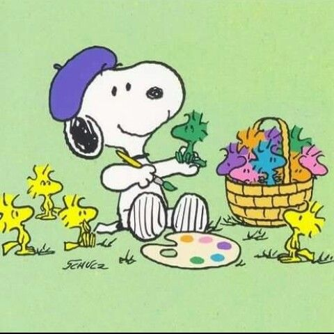

Hello, I'm Akhila! I'm a junior at UTD studying Information Technology. I love making art in my free time and so I've decided to make this little art blog to yap about it. I really video games too and a lot of my art is fan art of those games. This blog is sort of going to be like a portfolio/social media sort of thing for me since I don't like actual social media. So basically, it's just gonna be me talking about the processes behind my art and my thoughts on each piece. If you ever want to reach me, feel free to contact me through the contact page on this site!